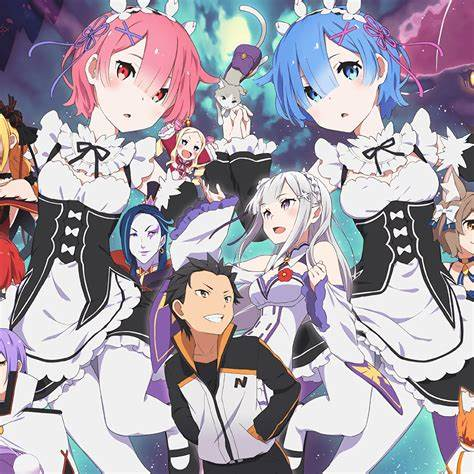

RE Zero

Abertura
"Re:Zero - Starting Life in Another World" é uma série de light novel japonesa escrita por Tappei Nagatsuki e ilustrada por Shinichirou Otsuka. A obra também foi adaptada em anime, ganhando grande popularidade entre os fãs de fantasia e isekai, um subgênero em que personagens são transportados para mundos diferentes.
A história acompanha Subaru Natsuki, um jovem comum que, após ser transportado para um mundo de fantasia enquanto voltava para casa, descobre que ganhou a habilidade de retornar no tempo após morrer. No entanto, cada vez que ele morre e volta, ele é obrigado a enfrentar as consequências de suas ações e a lidar com o sofrimento físico e emocional que isso acarreta.
Subaru se envolve com diversos personagens, incluindo a meio-elfa Emilia, a qual ele desenvolve sentimentos, e outros personagens com segredos e motivações complexas. A narrativa explora temas como resiliência, sacrifício e o peso das escolhas, enquanto revela gradualmente os mistérios do mundo em que Subaru se encontra.
"Re:Zero" é conhecido por subverter tropos comuns de isekai, mostrando as consequências emocionais e psicológicas do protagonista, que muitas vezes enfrenta situações trágicas e dolorosas. A série equilibra cenas de ação e tensão com momentos emocionais e reviravoltas, cativando os fãs com sua narrativa imprevisível.
A adaptação em anime foi elogiada pela fidelidade à história original e pelas performances de voz dos personagens, especialmente a atuação de Yusuke Kobayashi como Subaru. A série também levantou debates sobre as escolhas morais do protagonista e como ele lida com o fardo de suas ressurreições.
No geral, "Re:Zero - Starting Life in Another World" se destaca como uma obra que desafia as convenções do gênero isekai, explorando temas profundos através de uma narrativa emocionante e personagens envolventes.